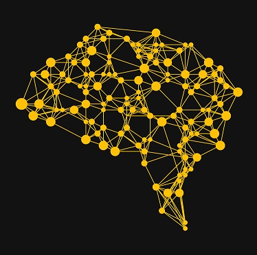

| Time | Topic |
|---|---|
| 7.35-7.40 | Stylight(Stefan Tippelt) |
| 7.40-8.05 | Interactivity across boundaries: Plotly in Python and R (Susann & Daniel) |
| 8.05-8.30 | Item Explorer: How to interactively explore combinatorial questions (Mihael) |
| 8.30-8.40 | The latest and greatest visualizations from around the world (Mihael) |
| 8.40- | More drinks + networking (All) |
How Humans see data - John Rauser
You Draw It: What Got Better or Worse During Obama’s Presidency
Next meetup takes place
on Wednesday, May 3rd 2017 at Wayra
Please get in touch with me
Here's another cool meetup:
